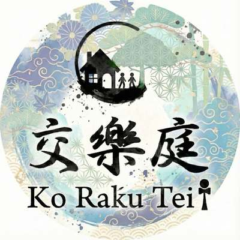
地域に眠る「想い・人・場所・文化」をつなぎ、対話から企画、実装、発信まで伴走する地域共創プロデュースカンパニー。
SCROLL地域には、まだ言葉になっていない想いや、つながっていない人、活かされていない場所があります。交樂庭は、その間に立ち、地域に眠る小さな可能性を見つけ、つなぎ、企画や体験としてカタチにしていきます。
地域に根を持ちながら、外の人・企業・文化ともつなぐ。それが、交樂庭の役割です。
浦野家の先祖が、喜多見の地図を描く。
人流を生むため、駅の建設に土地を譲る。
交樂庭として、人と土地の縁を結び直す。
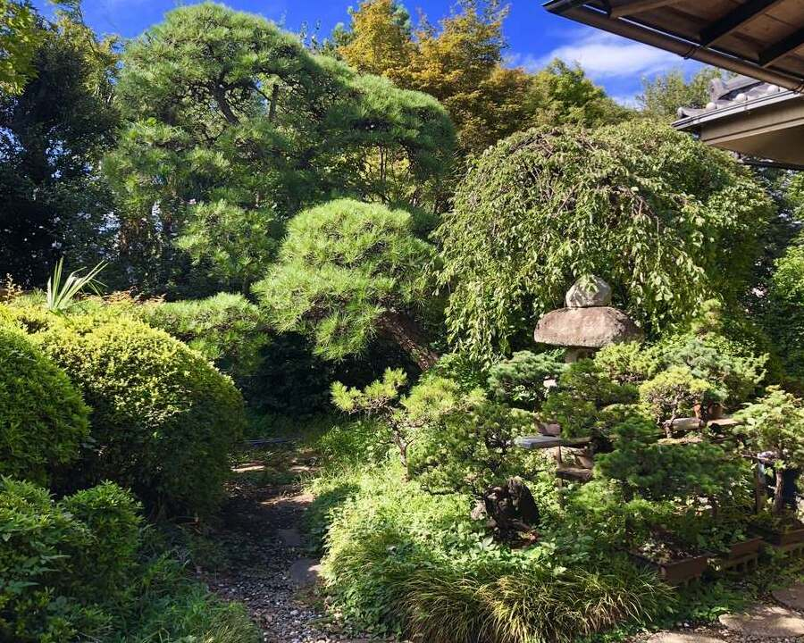
現代のまちづくりに必要なのは、誰か一人の強いリーダーシップではなく、地域に関わる多様な人々が、ゆるやかにつながり合い、ともに未来を切り拓く関係性のチームです。交樂庭は、その"つながりの翻訳者"として、土地に重ねられた記憶や文化の層に耳を澄ませながら、そこに暮らす人、訪れる人、挑戦する人の時間が自然に交わり、響き合うような場と流れを整えています。
世田谷区喜多見という地域においても、浦野家の先祖が1600年代から地図を描き、人流創出のために喜多見駅の建設に土地を譲り、歴史を言葉として残してきたのは、「浦野家は、喜多見と共に歩む」という静かな意思そのものでした。
押しつけの計画ではなく、眠る芽がのびやかに育つように。足元を静かに整え、縁を再接続し、人と土地の関係にやさしい"余白・余韻"をつくること。温故知新の精神のもと、過去の営みを尊重しながら未来へ編み直す仕事を、今日もまた続けています。
人・地域・文化・体験のつながりが、信頼や共創を通じて蓄積されていく「見えない地域資本」。
地域には、経済資本だけでは測れない、人との縁・場所との縁・文化との縁、記憶・信頼・想いといった、地域固有の関係性が存在します。交樂庭は、それらを"縁的資本"と捉え、丁寧につなぎ、継続的な体験や交流、共創プロジェクトへと転換していきます。
地域に眠る歴史・文化・自然・暮らし・人の想いなど、固有の地域資源を見つけ、その価値を再発見する。
地域資源の魅力を、人が参加し、感じ、共感できる体験価値へと変換する。
体験をきっかけに、人と人、人と地域のつながりを育て、信頼と共感を蓄積する。
育まれた関係をもとに、多様な主体が参加し、新たな事業や活動を共につくる。
共創によって生まれた価値を地域へ還元し、新たな地域資源や次の活動へとつなげていく。
ふたたび、01 文化資源の発見へ
縁的資本が蓄積し、循環した先に、地域へ還っていくもの。
土地に重ねられた記憶や文化の層に耳を澄ませ、人と人、人と土地の"縁"を丁寧につなぐ。交樂庭は、その"つながりの翻訳者"です。
交樂庭は、この縁的資本を発見し、育て、循環させることで、持続可能な賑わいをつくります。
地域資源は、見つけるだけではなく、
縁によって育ち続ける。
現代の寺は、人と人の関係性を育て直す「まちづくりの装置」になり得る。静けさを大切にしながらも、人と人がゆるやかに交わる"余白"をつくっていく。寺と地域商社だからこそできる役割だと思うんです。
— 副住職（浄土宗 慶元寺）地域に眠る資源を見つけ、つなぎ、カタチにするまで。交樂庭がご一緒できることは、大きく3つあります。
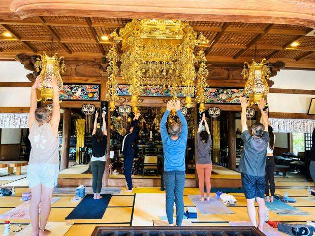
地域の想いを発掘し、人・企業・地域資源をつなぎ、共創プロジェクトをつくります。寺院を中心とした地域資源を活かした交流イベントの企画・運営や、対話の場づくりを通じて、地域住民と来街者の交流、関係人口の創出を促進します。
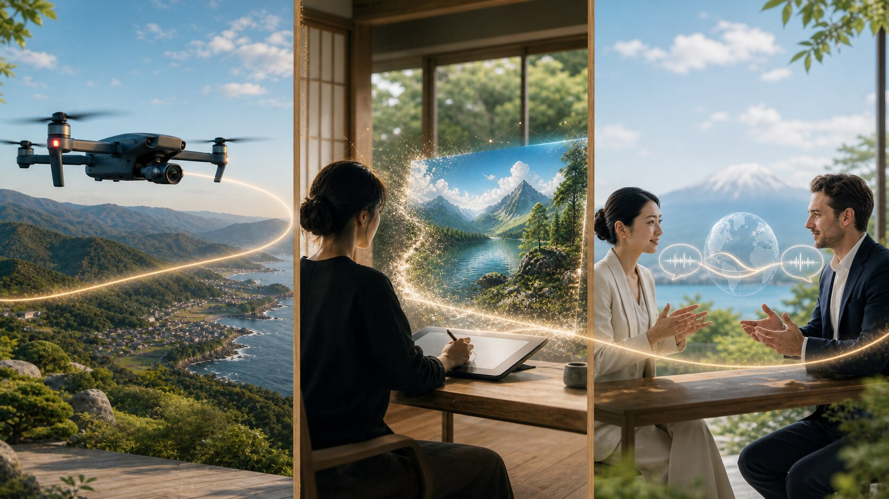
地域固有の文化・人・場所を、参加したくなる体験やコンテンツへ編集します。写真・動画制作やマイクロドローンによる特殊撮影から、けん玉体験を通じてEQ（心の知恵）を育むプログラムまで、体験の設計から発信まで手がけます。
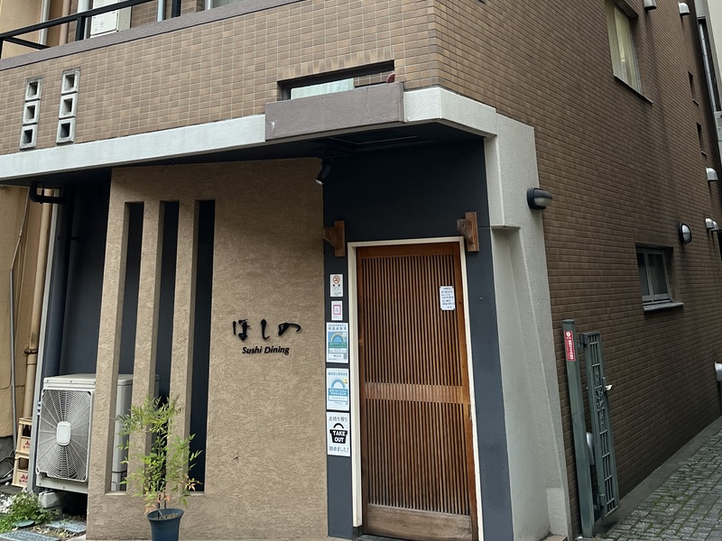
既存・遊休資産に、新しい役割と人の流れを生み出します。暮らす場所から、地域とつながる場所へ。交樂庭は、自ら保有・運営する「喜多見フローラル」を通じて、住まいと地域の新しい関係づくりを実践しています。
喜多見フローラルについて（準備中）浜倉的商店製作所が運営する商業施設「グランハマー」様にて、施設内の様子が写真だけでは伝わりづらいという課題に対し、マイクロドローン撮影を実施。施設のHPへ掲載する動画として、空間の奥行きや回遊性を立体的に可視化しました。
一つひとつの現場が、"縁"が生まれた記録です。案件を重ねるごとに、地域に眠る資本が少しずつかたちになっていきます。
祭りへの参加はあっても、地域内での滞在時間が短く、地域経済への波及や継続的な交流につながりにくい状態。
キッチンカー、縁日、交流企画などを組み合わせ、短時間で帰る祭りから「滞在して楽しむ祭り」へ再設計。
2025年・2026年も継続開催し、地域の参画者・賛同者が増加。
寺院、地域住民、出店者、来街者が継続的に関わり、単発のイベントから地域の恒例行事へと関係性が育ち始めている。
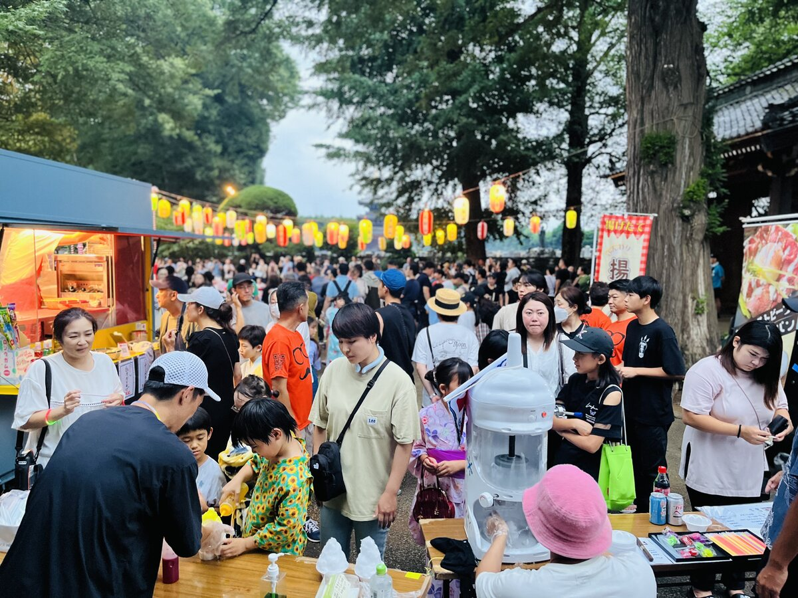
本堂の戸を開けると心地よい風と木々の匂いが体にしみ込む。静けさの賑わいをかたちにする象徴的な取り組みとして、2024年度は1年間で計3回開催しました。
参加者と本堂、講師陣の間に、静けさを介した新たな縁が生まれている。
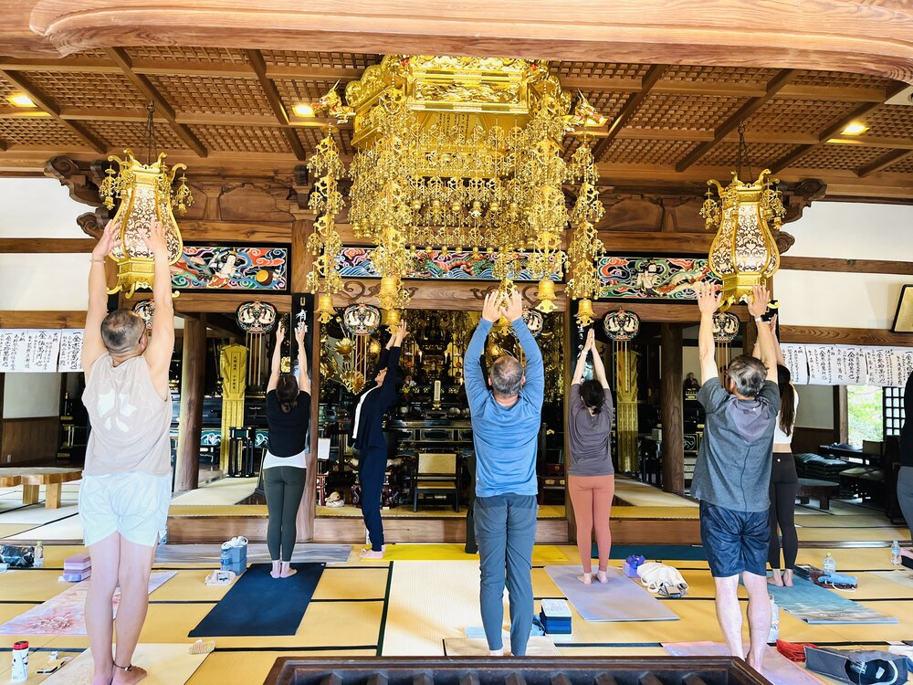
慶元寺の静謐な空間の中、本殿での念仏・木魚体験に加え、日本の伝統文化である太鼓や殺陣も体感いただきました。
海外企業と慶元寺、日本文化との間に、体験を通じた新たな縁が生まれた。
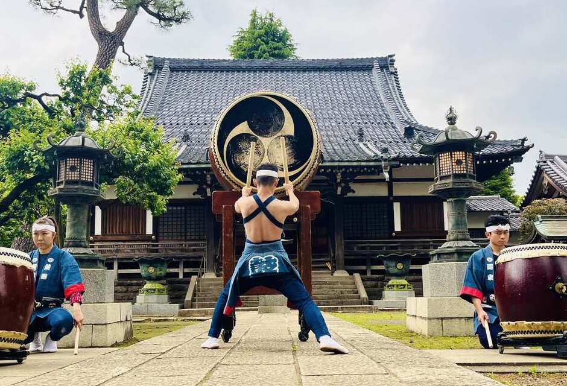
金沢市にて地域資源を活かした体験プログラムの企画支援と地域経済波及を図る仕組みづくりを実施しました。
地域の担い手と交樂庭の間に、体験プログラムづくりを通じた協働の縁が生まれた。
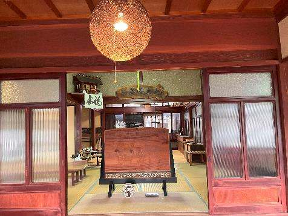
京北地域の観光資源をめぐるオリジナル体験プログラムの企画支援と、地域経済波及を図る仕組みづくりを実施しました。
京北の地域資源と来訪者の間に、新しい体験を通じた縁が生まれた。
すでにある資源や人の縁をつなぎ直し、新しい交流や体験を生み出す「縁的資本の実証フィールド」です。
喜びが多く見える街、喜多見。
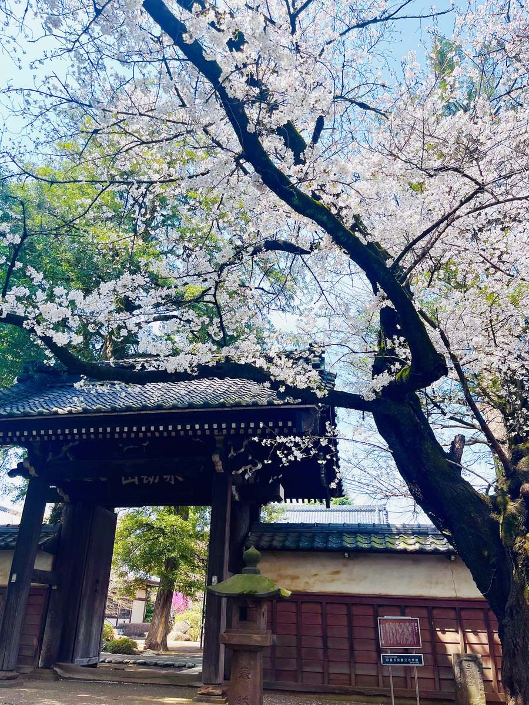
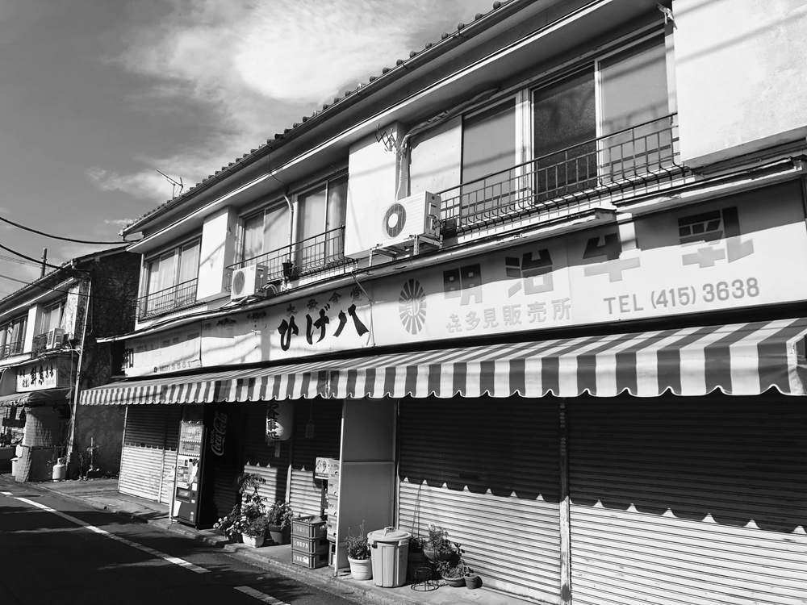
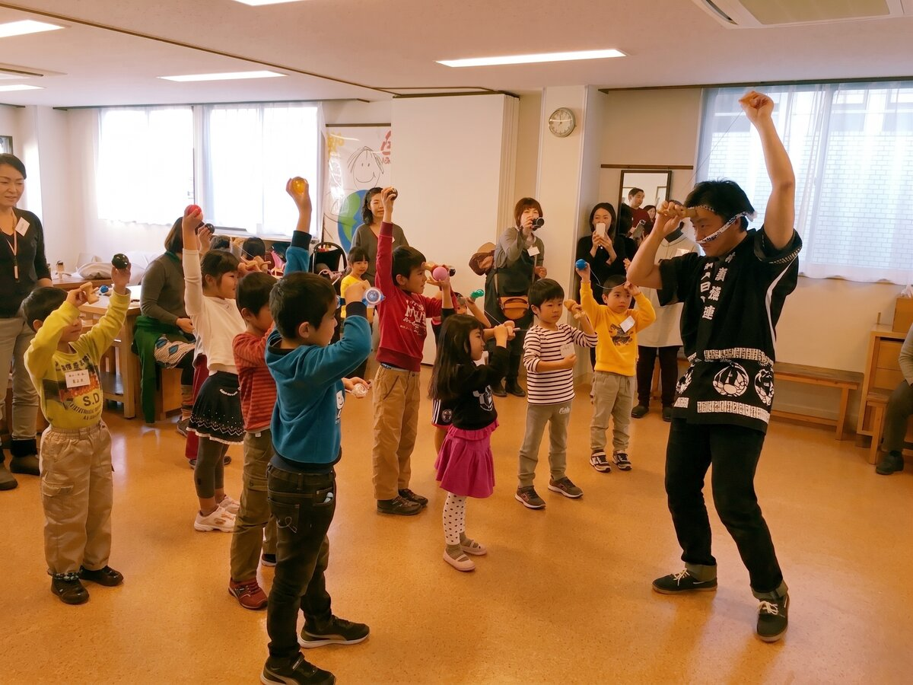
ここで生まれた小さな実践を、
地域の未来へ、そして他の地域へ。
喜多見にある、洗練された静謐（せいひつ）な世界観。都心部からアクセス良好な、特別感のあるオフサイトミーティング会場としてもご活用いただけます。
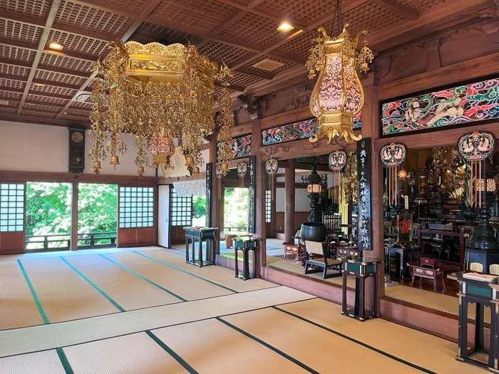
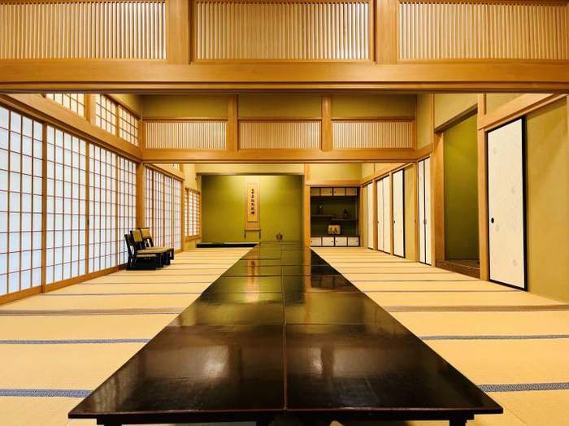
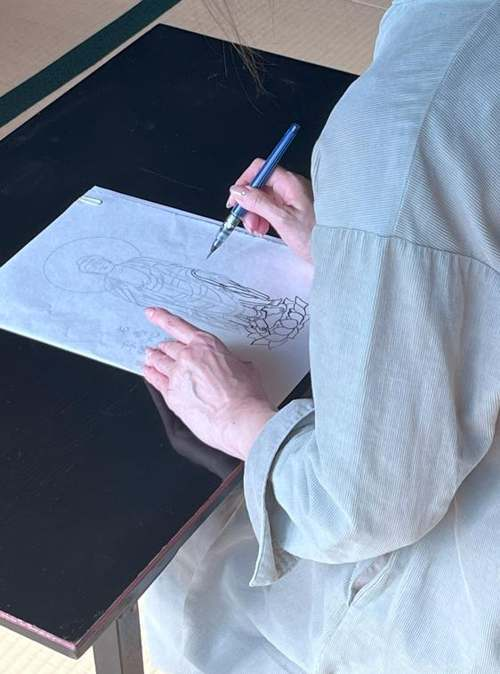
心を整え、静寂の中で行う写仏体験プログラム。初心者でも安心してご参加いただけます。@1,000円（税別）× 人数
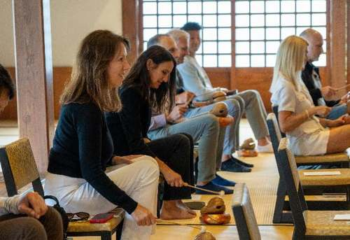
副住職の導きのもと、念仏を唱えながら木魚を叩く体験。海外の方にも人気の、癒しとマインドフルネスを感じられる時間です。
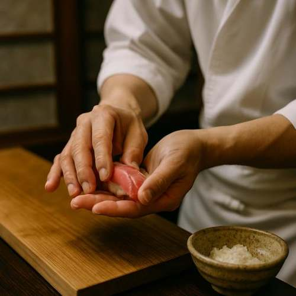
豊洲の名店「鮨 晶（しょう）」による出張本格江戸前鮨。格式あるお寺で味わう、極上のおもてなし体験です。
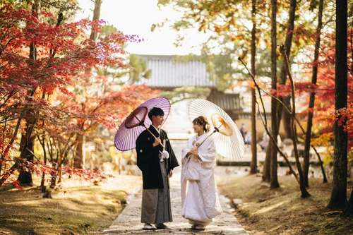
四季折々の自然を背景に、カメラマンが最高の瞬間を撮影。和傘・法被を使い、日本らしさを演出します。
地域を回遊しながら学びを得られる機会づくりの創出を目指していきます。誰かの所有物ではない、関わるすべての人が「ここは自分のまちだ」と感じられる未来へ。
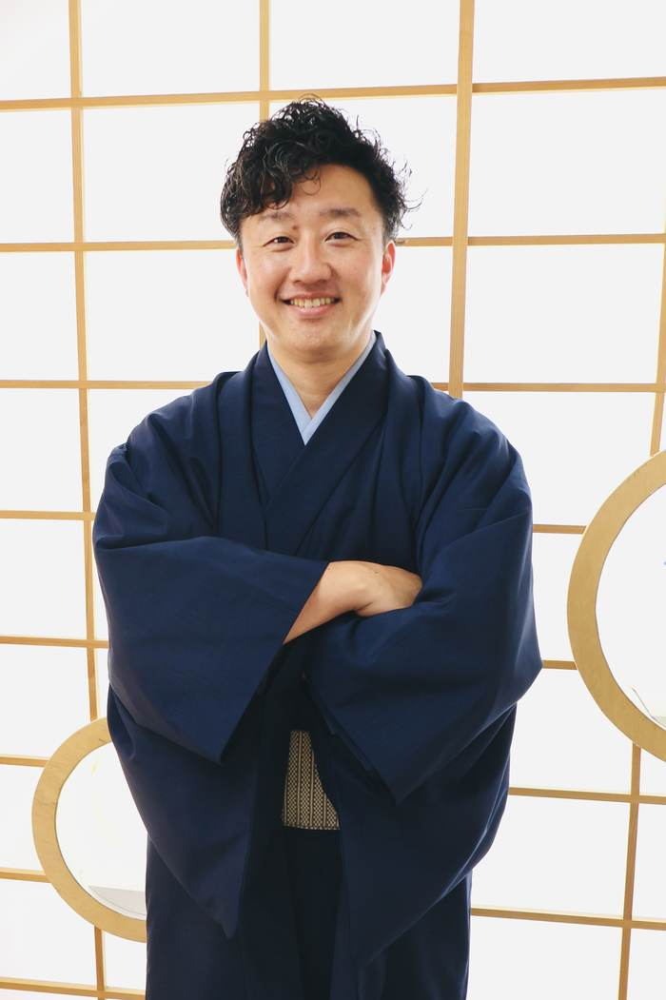
1600年頃から世田谷区喜多見に居住する浦野家の15代目。実家の庭で家族・友人・地域の人・民泊ゲストが交わってきた原体験が、「交樂庭」という名称と思想の由来になっています。「楽しいが交わる機会を提供したい」という想いのもと、地域の語り・日常・遊休資産に眠る価値を丁寧にすくい上げ、物語や体験へと編集しています。
地域を盛り上げたい。空いている場所を活かしたい。地域の文化を、新しい体験にしたい。まだ企画になっていない段階でも構いません。交樂庭は、想いや課題を一緒に整理するところから伴走します。